CAN COMMUNICATION SYSTEM (for RHD) > TERMINALS OF ECU |
| DISCONNECT CABLE FROM NEGATIVE BATTERY TERMINAL |
Disconnect the cable from the negative (-) battery terminal before measuring the resistances of the main wire and the branch wire.
| JUNCTION CONNECTOR |
NO. 1 JUNCTION CONNECTOR
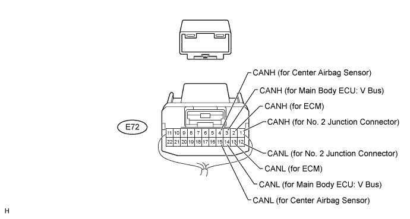
| No. 1 Junction Connector | Wiring Color | Connect to |
| E72-1 (CANH) | Y | No. 2 junction connector |
| E72-12 (CANL) | B | |
| E72-2 (CANH) | P | ECM |
| E72-13 (CANL) | B | |
| E72-3 (CANH) | SB | Main body ECU (cowl side junction block LH) (V bus) |
| E72-14 (CANL) | B | |
| E72-4 (CANH) | GR | Center airbag sensor |
| E72-15 (CANL) | B |
NO. 2 JUNCTION CONNECTOR
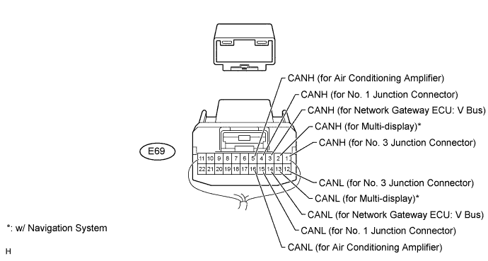
| No. 2 Junction Connector | Wiring Color | Connect to |
| E69-1 (CANH) | W | No. 3 junction connector |
| E69-12 (CANL) | B | |
| E69-2 (CANH)* | P | Multi-display |
| E69-13 (CANL)* | B | |
| E69-3 (CANH) | BR | Network gateway ECU (V bus) |
| E69-14 (CANL) | B | |
| E69-4 (CANH) | Y | No. 1 junction connector |
| E69-15 (CANL) | B | |
| E69-5 (CANH) | G | Air conditioning amplifier |
| E69-16 (CANL) | B |
NO. 3 JUNCTION CONNECTOR
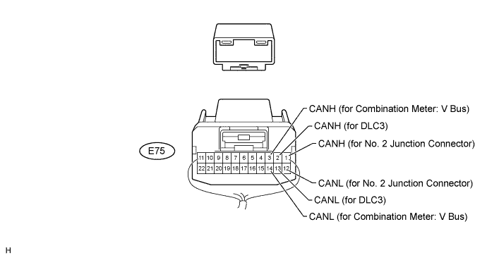
| No. 3 Junction Connector | Wiring Color | Connect to |
| E75-1 (CANH) | W | No. 2 junction connector |
| E75-12 (CANL) | B | |
| E75-2 (CANH) | G | DLC3 |
| E75-13 (CANL) | B | |
| E75-3 (CANH) | V | Combination meter (V bus) |
| E75-14 (CANL) | B |
NO. 4 JUNCTION CONNECTOR
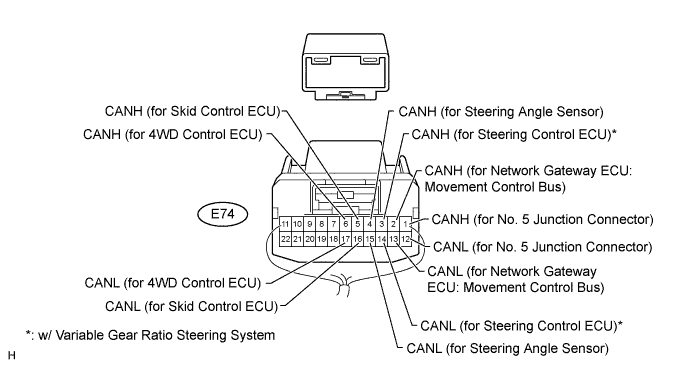
| No. 4 Junction Connector | Wiring Color | Connect to |
| E74-1 (CANH) | W | No. 5 junction connector |
| E74-12 (CANL) | L | |
| E74-2 (CANH) | SB | Network gateway ECU (Movement control bus) |
| E74-13 (CANL) | L | |
| E74-3 (CANH)* | LG | Steering control ECU |
| E74-14 (CANL)* | L | |
| E74-4 (CANH) | GR | Steering angle sensor |
| E74-15 (CANL) | L | |
| E74-5 (CANH) | V | Skid control ECU |
| E74-16 (CANL) | L | |
| E74-6 (CANH) | P | 4WD control ECU |
| E74-17 (CANL) | L |
NO. 5 JUNCTION CONNECTOR
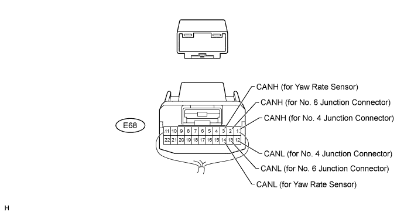
| No. 5 Junction Connector | Wiring Color | Connect to |
| E68-1 (CANH) | W | No. 4 junction connector |
| E68-12 (CANL) | L | |
| E68-2 (CANH) | Y | No. 6 junction connector |
| E68-13 (CANL) | L | |
| E68-3 (CANH) | BR | Yaw rate sensor |
| E68-14 (CANL) | L |
NO. 6 JUNCTION CONNECTOR
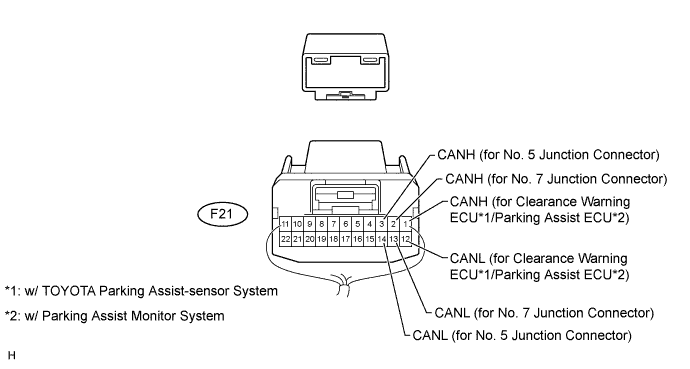
| No. 6 Junction Connector | Wiring Color | Connect to |
| F21-1 (CANH)*1 | V | Clearance warning ECU |
| F21-12 (CANL)*1 | L | |
| F21-1 (CANH)*2 | V | Parking assist ECU |
| F21-12 (CANL)*2 | L | |
| F21-2 (CANH) | W | No. 7 junction connector |
| F21-13 (CANL) | L | |
| F21-3 (CANH) | Y | No. 5 junction connector |
| F21-14 (CANL) | L |
NO. 7 JUNCTION CONNECTOR
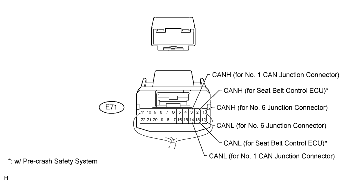
| No. 7 Junction Connector | Wiring Color | Connect to |
| E71-1 (CANH) | W | No. 6 junction connector |
| E71-12 (CANL) | L | |
| E71-2 (CANH)* | G | Seat belt control ECU |
| E71-13 (CANL)* | L | |
| E71-3 (CANH) | W | No. 1 CAN junction connector |
| E71-14 (CANL) | L |
NO. 8 JUNCTION CONNECTOR
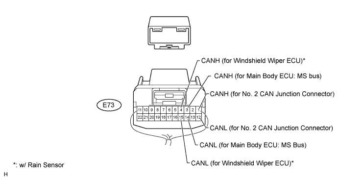
| No. 8 Junction Connector | Wiring Color | Connect to |
| E73-1 (CANH) | W | No. 2 CAN junction connector |
| E73-12 (CANL) | R | |
| E73-3 (CANH) | GR | Main body ECU (cowl side junction block LH) (MS bus) |
| E73-14 (CANL) | R | |
| E73-4 (CANH)* | LG | Windshield wiper ECU |
| E73-15 (CANL)* | R |
NO. 9 JUNCTION CONNECTOR
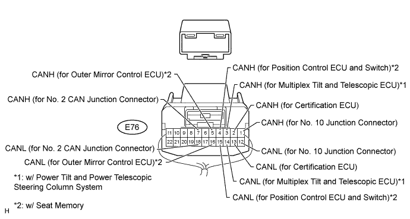
| No. 9 Junction Connector | Wiring Color | Connect to |
| E76-1 (CANH) | W | No. 10 junction connector |
| E76-12 (CANL) | R | |
| E76-2 (CANH) | LG | Certification ECU (smart key ECU assembly) |
| E76-13 (CANL) | R | |
| E76-3 (CANH)*1 | P | Multiplex tilt and telescopic ECU |
| E76-14 (CANL)*1 | R | |
| E76-4 (CANH)*2 | V | Position control ECU and switch |
| E76-15 (CANL)*2 | R | |
| E76-5 (CANH)*2 | BR | Outer mirror control ECU |
| E76-16 (CANL)*2 | R | |
| E76-7 (CANH) | Y | No. 2 CAN junction connector |
| E76-18 (CANL) | R |
NO. 10 JUNCTION CONNECTOR
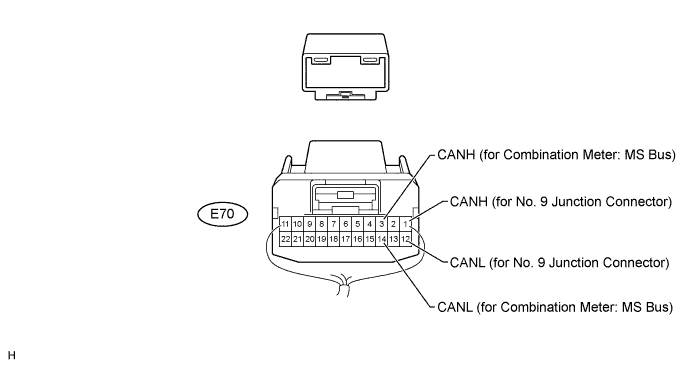
| No. 10 Junction Connector | Wiring Color | Connect to |
| E70-1 (CANH) | W | No. 9 junction connector |
| E70-12 (CANL) | R | |
| E70-3 (CANH) | LG | Combination meter (MS bus) |
| E70-14 (CANL) | R |
NO. 1 CAN JUNCTION CONNECTOR
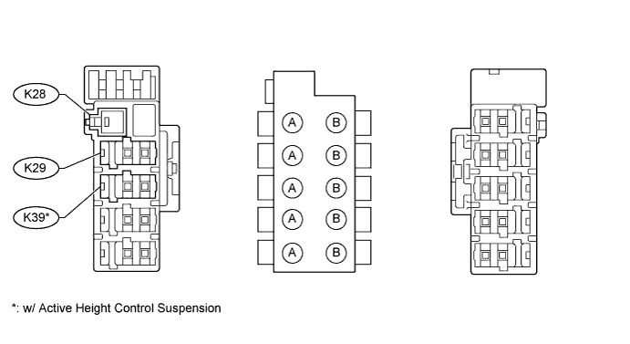
| Junction Connector A Side | Wiring Color (CANH Side) | Wiring Color (CANL Side) |
| K28 | - | W-B |
| No. 7 junction connector (K29) | W | L |
| Suspension control ECU (K39)* | V | L |
NO. 2 CAN JUNCTION CONNECTOR
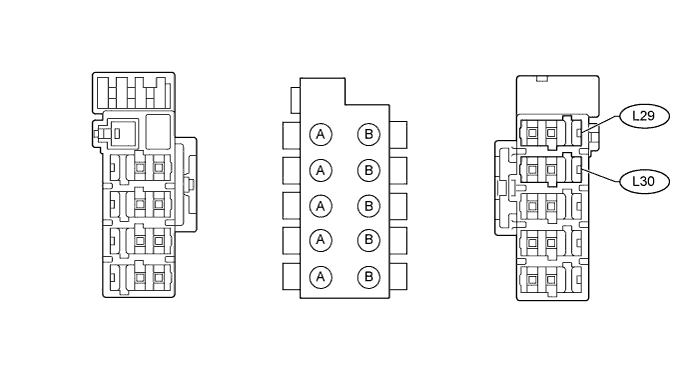
| Junction Connector B Side | Wiring Color (CANH Side) | Wiring Color (CANL Side) |
| No. 8 junction connector (L29) | W | R |
| No. 9 junction connector (L30) | Y | R |
| TERMINALS OF CONNECTORS FOR JUNCTION CONNECTOR (CAN JUNCTION CONNECTOR) |
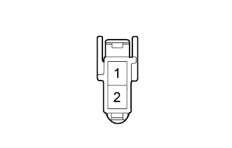 |
| Terminal No. | Symbol |
| 1 | CANH |
| 2 | CANL |
| CHECK DLC3 |
Disconnect the cable from the negative (-) battery terminal before measuring the resistances of the main wire and the branch wire.
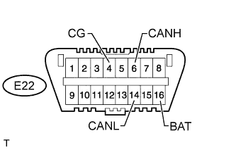 |
Measure the resistance according to the value(s) in the table below.
| Terminal No. (Symbol) | Wiring Color | Switch Condition | Specified Condition |
| E22-6 (CANH) - E22-14 (CANL) | G - B | Engine switch off | 54 to 69 Ω |
| E22-6 (CANH) - E22-4 (CG) | G - W-B | Engine switch off | 200 Ω or higher |
| E22-14 (CANL) - E22-4 (CG) | B - W-B | Engine switch off | 200 Ω or higher |
| E22-6 (CANH) - E22-16 (BAT) | G - O | Engine switch off | 6 kΩ or higher |
| E22-14 (CANL) - E22-16 (BAT) | B - O | Engine switch off | 6 kΩ or higher |
| CHECK SKID CONTROL ECU |
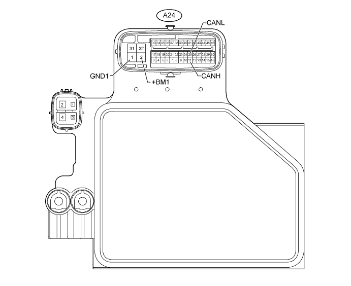
Disconnect the A24 ECU connector.
Measure the resistance according to the value(s) in the table below.
| Terminal No. (Symbol) | Wiring Color | Switch Condition | Specified Condition |
| A24-11 (CANH) - A24-25 (CA1NL) | V - L | Engine switch off | 54 to 69 Ω |
| A24-11 (CANH) - A24-1 (GND1) | V - W-B | Engine switch off | 200 Ω or higher |
| A24-25 (CANL) - A24-1 (GND1) | L - W-B | Engine switch off | 200 Ω or higher |
| A24-11 (CANH) - A24-2 (+BM1) | V - B | Engine switch off | 6 kΩ or higher |
| A24-25 (CANL) - A24-2 (+BM1) | L - B | Engine switch off | 6 kΩ or higher |
| CHECK AIR CONDITIONING AMPLIFIER (w/ REAR AIR CONDITIONING AMPLIFIER) |
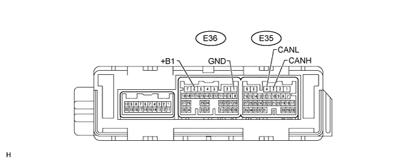
Measure the resistance according to the value(s) in the table below.
| Terminal No. (Symbol) | Wiring Color | Condition | Specified Condition |
| E35-3 (CANH) - E35-4 (CANL) | G - B | Engine switch off | 54 to 69 Ω |
| E35-3 (CANH) - E36-1 (GND) | G - W-B | Engine switch off | 200 Ω or higher |
| E35-4 (CANL) - E36-1 (GND) | B - W-B | ||
| E35-3 (CANH) - E36-6 (+B1) | G - R | Engine switch off | 6 kΩ or higher |
| E35-4 (CANL) - E36-6 (+B1) | B - R |
| CHECK AIR CONDITIONING AMPLIFIER (w/o REAR AIR CONDITIONING AMPLIFIER) |
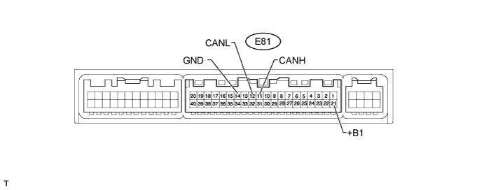
Disconnect the E81 ECU connector.
Measure the resistance according to the value(s) in the table below.
| Terminal No. (Symbol) | Wiring Color | Switch Condition | Specified Condition |
| E81-11 (CANH) - E81-12 (CANL) | G - B | Engine switch off | 54 to 69 Ω |
| E81-11 (CANH) - E81-14 (GND) | G - W-B | Engine switch off | 200 Ω or higher |
| E81-12 (CANL) - E81-14 (GND) | B - W-B | Engine switch off | 200 Ω or higher |
| E81-11 (CANH) - E81-21 (+B1) | G - R | Engine switch off | 6 kΩ or higher |
| E81-12 (CANL) - E81-21 (+B1) | B - R | Engine switch off | 6 kΩ or higher |
| CHECK ECM |
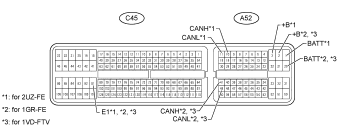
Disconnect the A52 and C46 ECM connectors.
Measure the resistance according to the value(s) in the table below.
| Terminal No. (Symbol) | Wiring Color | Switch Condition | Specified Condition |
| A52-10 (CANH) - A52-11 (CANL)*1 | P - B | Engine switch off | 108 to 132 Ω |
| A52-10 (CANH) - C46-81 (E1)*1 | P - BR | Engine switch off | 200 Ω or higher |
| A52-11 (CANL) - C46-81 (E1)*1 | B - BR | Engine switch off | 200 Ω or higher |
| A52-10 (CANH) - A52-3 (+B)*1 | P - B | Engine switch off | 6 kΩ or higher |
| A52-11 (CANL) - A52-3 (+B)*1 | B - B | Engine switch off | 6 kΩ or higher |
| A52-10 (CANH) - A52-1 (BATT)*1 | P - L | Engine switch off | 6 kΩ or higher |
| A52-11 (CANL) - A52-1 (BATT)*1 | B - L | Engine switch off | 6 kΩ or higher |
| A52-41 (CANH) - A52-49 (CANL)*2 | P - B | Engine switch off | 108 to 132 Ω |
| A52-41 (CANH) - C46-81 (E1)*2 | P - BR | Engine switch off | 200 Ω or higher |
| A52-49 (CANL) - C46-81 (E1)*2 | B - BR | Engine switch off | 200 Ω or higher |
| A52-41 (CANH) - A52-2 (+B)*2 | P - B | Engine switch off | 6 kΩ or higher |
| A52-49 (CANL) - A52-2 (+B)*2 | B - B | Engine switch off | 6 kΩ or higher |
| A52-41 (CANH) - A52-20 (BATT)*2 | P - L | Engine switch off | 6 kΩ or higher |
| A52-49 (CANL) - A52-20 (BATT)*2 | B - L | Engine switch off | 6 kΩ or higher |
| A52-41 (CANH) - A52-49 (CANL)*3 | P - B | Engine switch off | 108 to 132 Ω |
| A52-41 (CANH) - C46-81 (E1)*3 | P - BR | Engine switch off | 200 Ω or higher |
| A52-49 (CANL) - C46-81 (E1)*3 | B - BR | Engine switch off | 200 Ω or higher |
| A52-41 (CANH) - A52-20 (BATT)*3 | P - L | Engine switch off | 6 kΩ or higher |
| A52-49 (CANL) - A52-20 (BATT)*3 | B - L | Engine switch off | 6 kΩ or higher |
| A52-41 (CANH) - A52-2 (+B)*3 | P - B-W | Engine switch off | 6 kΩ or higher |
| A52-49 (CANL) - A52-2 (+B)*3 | B - B-W | Engine switch off | 6 kΩ or higher |
| CHECK MAIN BODY ECU (COWL SIDE JUNCTION BLOCK LH) |
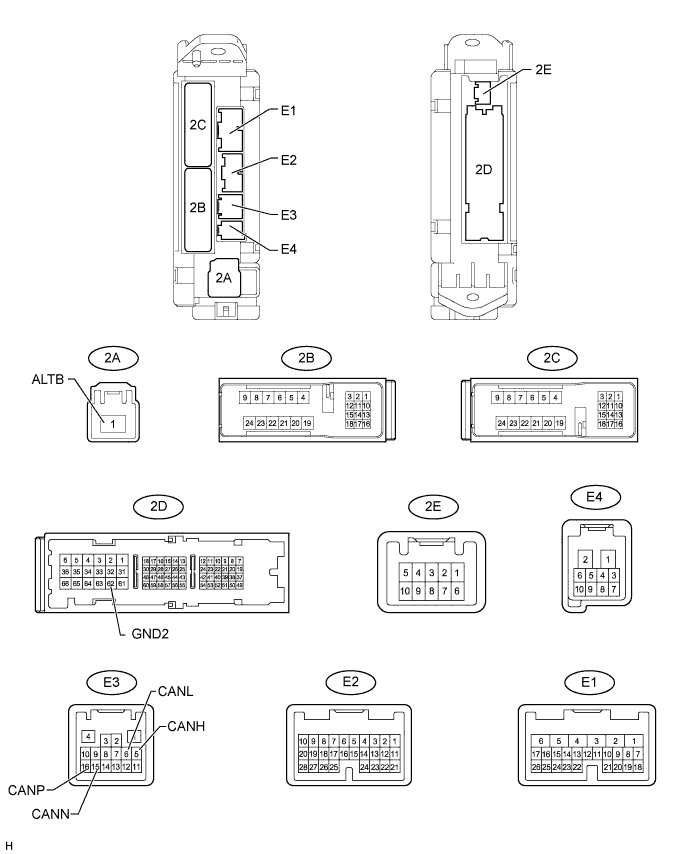
Disconnect the E3 ECU connector.
Disconnect the 2A and 2D junction connectors.
Measure the resistance according to the value(s) in the table below.
| Terminal No. (Symbol) | Wiring Color | Switch Condition | Specified Condition |
| E3-5 (CANH) - E3-6 (CANL)*1 | SB - B | Engine switch off | 54 to 69 Ω |
| E3-5 (CANH) - 2D-62 (GND2)*1 | SB - W-B | Engine switch off | 200 Ω or higher |
| E3-6 (CANL) - 2D-62 (GND2)*1 | B - W-B | Engine switch off | 200 Ω or higher |
| E3-5 (CANH) - 2A-1 (ALTB)*1 | SB - B | Engine switch off | 6 kΩ or higher |
| E3-6 (CANL) - 2A-1 (ALTB)*1 | B - B | Engine switch off | 6 kΩ or higher |
| E3-16 (CANP) - E3-15 (CANN)*2 | GR - R | Engine switch off | 108 to 132 Ω |
| E3-16 (CANP) - 2D-62 (GND2)*2 | GR - W-B | Engine switch off | 200 Ω or higher |
| E3-15 (CANN) - 2D-62 (GND2)*2 | R - W-B | Engine switch off | 200 Ω or higher |
| E3-16 (CANP) - 2A-1 (ALTB)*2 | GR - B | Engine switch off | 6 kΩ or higher |
| E3-15 (CANN) - 2A-1 (ALTB)*2 | R - B | Engine switch off | 6 kΩ or higher |
| CHECK COMBINATION METER |
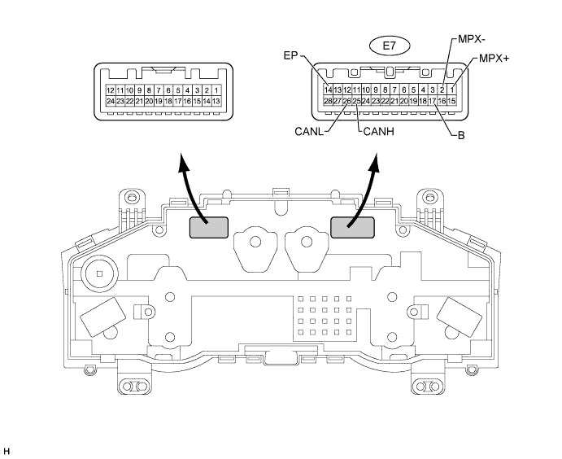
Disconnect the E7 ECU connector.
Measure the resistance according to the value(s) in the table below.
| Terminal No. (Symbol) | Wiring Color | Switch Condition | Specified Condition |
| E7-25 (CANH) - E7-26 (CANL)*1 | V - B | Engine switch off | 108 to 132 Ω |
| E7-25 (CANH) - E7-14 (EP)*1 | V - W-B | Engine switch off | 200 Ω or higher |
| E7-26 (CANL) - E7-14 (EP)*1 | B - W-B | Engine switch off | 200 Ω or higher |
| E7-25 (CANH) - E7-17 (B)*1 | V - R | Engine switch off | 6 kΩ or higher |
| E7-26 (CANL) - E7-17 (B)*1 | B - R | Engine switch off | 6 kΩ or higher |
| E7-1 (MPX+) - E7-2 (MPX-)*2 | LG - R | Engine switch off | 108 to 132 Ω |
| E7-1 (MPX+) - E7-14 (EP)*2 | LG - W-B | Engine switch off | 200 Ω or higher |
| E7-2 (MPX-) - E7-14 (EP)*2 | R - W-B | Engine switch off | 200 Ω or higher |
| E7-1 (MPX+) - E7-17 (B)*2 | LG - R | Engine switch off | 6 kΩ or higher |
| E7-2 (MPX-) - E7-17 (B)*2 | R - R | Engine switch off | 6 kΩ or higher |
| CHECK CENTER AIRBAG SENSOR |
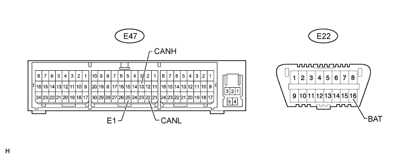
Disconnect the E47 sensor connector.
Measure the resistance according to the value(s) in the table below.
| Terminal No. (Symbol) | Wiring Color | Switch Condition | Specified Condition |
| E47-13 (CANH) - E47-22 (CANL) | GR - B | Engine switch off | 54 to 69 Ω |
| E47-13 (CANH) - E47-25 (E1) | GR - W-B | Engine switch off | 200 Ω or higher |
| E47-22 (CANL) - E47-25 (E1) | B - W-B | Engine switch off | 200 Ω or higher |
| E47-13 (CANH) - E22-16 (BAT) | GR - O | Engine switch off | 6 kΩ or higher |
| E47-22 (CANL) - E22-16 (BAT) | B - O | Engine switch off | 6 kΩ or higher |
| CHECK MULTI-DISPLAY |
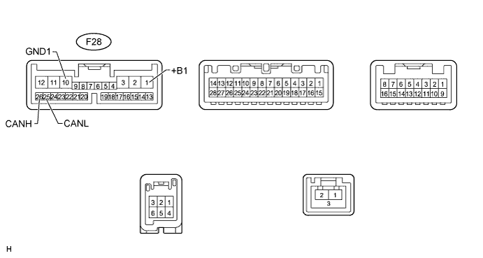
Disconnect the F28 multi-display connector.
Measure the resistance according to the value(s) in the table below.
| Terminal No. (Symbol) | Wiring Color | Switch Condition | Specified Condition |
| F28-26 (CANH) - F28-25 (CANL) | P - B | Engine switch off | 54 to 69 Ω |
| F28-26 (CANH) - F28-10 (GND1) | P - W-B | Engine switch off | 200 Ω or higher |
| F28-25 (CANL) - F28-10 (GND1) | B - W-B | Engine switch off | 200 Ω or higher |
| F28-26 (CANH) - F28-1 (+B1) | P - R | Engine switch off | 6 kΩ or higher |
| F28-25 (CANL) - F28-1 (+B1) | B - R | Engine switch off | 6 kΩ or higher |
| CHECK STEERING ANGLE SENSOR |
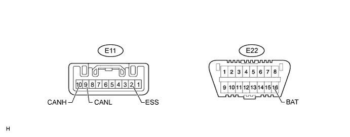
Disconnect the E11 sensor connector.
Measure the resistance according to the value(s) in the table below.
| Terminal No. (Symbol) | Wiring Color | Switch Condition | Specified Condition |
| E11-10 (CANH) - E11-9 (CANL) | GR - L | Engine switch off | 54 to 69 Ω |
| E11-10 (CANH) - E11-2 (ESS) | GR - W-B | Engine switch off | 200 Ω or higher |
| E11-9 (CANL) - E11-2 (ESS) | L - W-B | Engine switch off | 200 Ω or higher |
| E11-10 (CANH) - E22-16 (BAT) | GR - O | Engine switch off | 6 kΩ or higher |
| E11-9 (CANL) - E22-16 (BAT) | L - O | Engine switch off | 6 kΩ or higher |
| CHECK YAW RATE SENSOR |
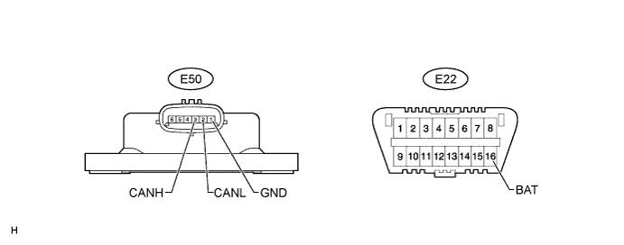
Disconnect the E50 sensor connector.
Measure the resistance according to the value(s) in the table below.
| Terminal No. (Symbol) | Wiring Color | Switch Condition | Specified Condition |
| E50-3 (CANH) - E50-2 (CANL) | BR - L | Engine switch off | 54 to 69 Ω |
| E50-3 (CANH) - E50-1 (GND) | BR - W-B | Engine switch off | 200 Ω or higher |
| E50-2 (CANL) - E50-1 (GND) | L - W-B | Engine switch off | 200 Ω or higher |
| E50-3 (CANH) - E22-16 (BAT) | BR - O | Engine switch off | 6 kΩ or higher |
| E50-2 (CANL) - E22-16 (BAT) | L - O | Engine switch off | 6 kΩ or higher |
| CHECK SEAT BELT CONTROL ECU |
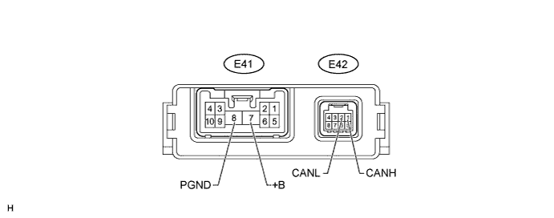
Disconnect the E41 and E42 ECU connectors.
Measure the resistance according to the value(s) in the table below.
| Terminal No. (Symbol) | Wiring Color | Switch Condition | Specified Condition |
| E42-1 (CANH) - E42-2 (CANL) | G - L | Engine switch off | 54 to 69 Ω |
| E42-1 (CANH) - E41-8 (PGND) | G - W-B | Engine switch off | 200 Ω or higher |
| E42-2 (CANL) - E41-8 (PGND) | L - W-B | Engine switch off | 200 Ω or higher |
| E42-1 (CANH) - E41-7 (+B) | G - R | Engine switch off | 6 kΩ or higher |
| E42-2 (CANL) - E41-7 (+B) | L - R | Engine switch off | 6 kΩ or higher |
| CHECK CLEARANCE WARNING ECU |
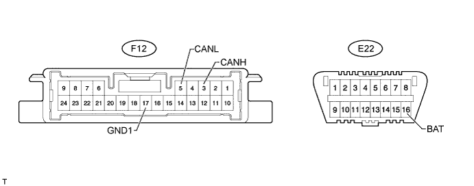
Disconnect the F12 ECU connector.
Measure the resistance according to the value(s) in the table below.
| Terminal No. (Symbol) | Wiring Color | Switch Condition | Specified Condition |
| F12-3 (CANH) - F12-5 (CANL) | V - L | Engine switch off | 54 to 69 Ω |
| F12-3 (CANH) - F12-17 (GND1) | V - W-B | Engine switch off | 200 Ω or higher |
| F12-5 (CANL) - F12-17 (GND1) | L - W-B | Engine switch off | 200 Ω or higher |
| F12-3 (CANH) - E22-16 (BAT) | V - O | Engine switch off | 6 kΩ or higher |
| F12-5 (CANL) - E22-16 (BAT) | L - O | Engine switch off | 6 kΩ or higher |
| CHECK OUTER MIRROR CONTROL ECU |
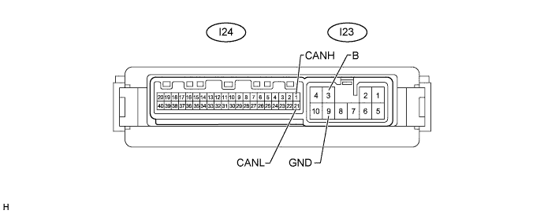
Disconnect the I23 and I24 ECU connectors.
Measure the resistance according to the value(s) in the table below.
| Terminal No. (Symbol) | Wiring Color | Switch Condition | Specified Condition |
| I24-1 (CANH) - I24-21 (CANL) | BR - R | Engine switch off | 54 to 69 Ω |
| I24-1 (CANH) - I23-9 (GND) | BR - W-B | Engine switch off | 200 Ω or higher |
| I24-21 (CANL) - I23-9 (GND) | R - W-B | Engine switch off | 200 Ω or higher |
| I24-1 (CANH) - I23-3 (B) | BR - R | Engine switch off | 6 kΩ or higher |
| I24-21 (CANL) - I23-3 (B) | R - R | Engine switch off | 6 kΩ or higher |
| CHECK MULTIPLEX TILT AND TELESCOPIC ECU |
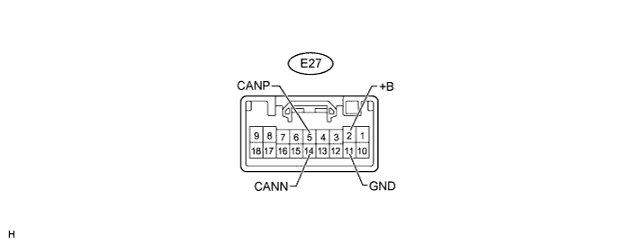
Disconnect the E27 ECU connector.
Measure the resistance according to the value(s) in the table below.
| Terminal No. (Symbol) | Wiring Color | Switch Condition | Specified Condition |
| E27-5 (CANP) - E27-14 (CANN) | P - R | Engine switch off | 54 to 69 Ω |
| E27-5 (CANP) - E27-11 (GND) | P - W-B | Engine switch off | 200 Ω or higher |
| E27-14 (CANN) - E27-11 (GND) | R - W-B | Engine switch off | 200 Ω or higher |
| E27-5 (CANP) - E27-2 (+B) | P - L | Engine switch off | 6 kΩ or higher |
| E27-14 (CANN) - E27-2 (+B) | R - L | Engine switch off | 6 kΩ or higher |
| CHECK CERTIFICATION ECU (SMART KEY ECU ASSEMBLY) |
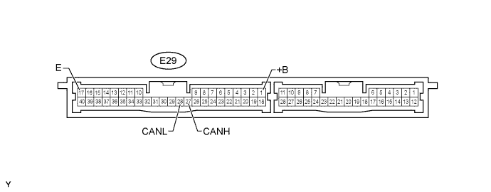
Disconnect the E29 ECU connector.
Measure the resistance according to the value(s) in the table below.
| Terminal No. (Symbol) | Wiring Color | Switch Condition | Specified Condition |
| E29-27 (CANH) - E29-28 (CANL) | LG - R | Engine switch off | 54 to 69 Ω |
| E29-27 (CANH) - E29-17 (E) | LG - W-B | Engine switch off | 200 Ω or higher |
| E29-28 (CANL) - E29-17 (E) | R - W-B | Engine switch off | 200 Ω or higher |
| E29-27 (CANH) - E29-1 (+B) | LG - B | Engine switch off | 6 kΩ or higher |
| E29-28 (CANL) - E29-1 (+B) | R - B | Engine switch off | 6 kΩ or higher |
| CHECK POSITION CONTROL ECU AND SWITCH |
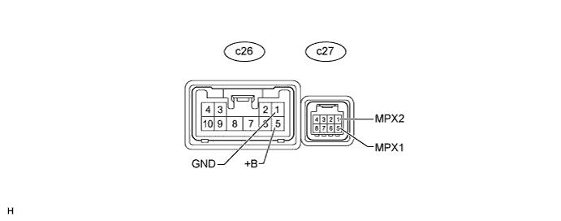
Disconnect the c26 and c27 ECU connectors.
Measure the resistance according to the value(s) in the table below.
| Terminal No. (Symbol) | Wiring Color | Switch Condition | Specified Condition |
| c27-5 (MPX1) - c27-1 (MPX2) | V - R | Engine switch off | 54 to 69 Ω |
| c27-5 (MPX1) - c26-1 (GND) | V - W-B | Engine switch off | 200 Ω or higher |
| c27-1 (MPX2) - c26-1 (GND) | R - W-B | Engine switch off | 200 Ω or higher |
| c27-5 (MPX1) - c26-5 (+B) | V - L | Engine switch off | 6 kΩ or higher |
| c27-1 (MPX2) - c26-5 (+B) | R - L | Engine switch off | 6 kΩ or higher |
| CHECK 4WD CONTROL ECU |
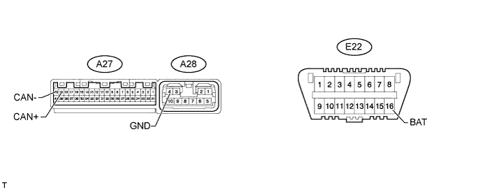
Disconnect the A27 and A28 ECU connectors.
Measure the resistance according to the value(s) in the table below.
| Terminal No. (Symbol) | Wiring Color | Switch Condition | Specified Condition |
| A27-19 (CAN+) - A27-20 (CAN-) | P - L | Engine switch off | 54 to 69 Ω |
| A27-19 (CAN+) - A28-4 (GND) | P - W | Engine switch off | 200 Ω or higher |
| A27-20 (CAN-) - A28-4 (GND) | L - W | Engine switch off | 200 Ω or higher |
| A27-19 (CAN+) - E22-16 (BAT) | P - O | Engine switch off | 6 kΩ or higher |
| A27-20 (CAN-) - E22-16 (BAT) | L - O | Engine switch off | 6 kΩ or higher |
| CHECK NETWORK GATEWAY ECU |
Disconnect the E31 ECU connector.
Measure the resistance according to the value(s) in the table below.
| Terminal No. (Symbol) | Wiring Color | Switch Condition | Specified Condition |
| E31-16 (CA1H) - E31-15 (CA1L)*1 | BR - B | Engine switch off | 54 to 69 Ω |
| E31-16 (CA1H) - E31-4 (GND)*1 | BR - W-B | Engine switch off | 200 Ω or higher |
| E31-15 (CA1L) - E31-4 (GND)*1 | B - W-B | Engine switch off | 200 Ω or higher |
| E31-16 (CA1H) - E31-2 (BATT)*1 | BR - R | Engine switch off | 6 kΩ or higher |
| E31-15 (CA1L) - E31-2 (BATT)*1 | B - R | Engine switch off | 6 kΩ or higher |
| E31-13 (CA2H) - E31-12 (CA2L)*2 | SB - L | Engine switch off | 108 to 132 Ω |
| E31-13 (CA2H) - E31-4 (GND)*2 | SB - W-B | Engine switch off | 200 Ω or higher |
| E31-12 (CA2L) - E31-4 (GND)*2 | L - W-B | Engine switch off | 200 Ω or higher |
| E31-13 (CA2H) - E31-2 (BATT)*2 | SB - R | Engine switch off | 6 kΩ or higher |
| E31-12 (CA2L) - E31-2 (BATT)*2 | L - R | Engine switch off | 6 kΩ or higher |
| CHECK STEERING CONTROL ECU |
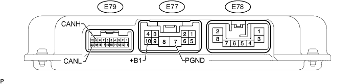
Disconnect the E77 and E79 ECU connectors.
Measure the resistance according to the value(s) in the table below.
| Terminal No. (Symbol) | Wiring Color | Switch Condition | Specified Condition |
| E79-9 (CANH) - E79-20 (CANL) | LG - L | Engine switch off | 54 to 69 Ω |
| E79-9 (CANH) - E77-7 (PGND) | LG - W-B | Engine switch off | 200 Ω or higher |
| E79-20 (CANL) - E77-7 (PGND) | L - W-B | Engine switch off | 200 Ω or higher |
| E79-9 (CANH) - E77-10 (+B1) | LG - R | Engine switch off | 6 kΩ or higher |
| E79-20 (CANL) - E77-10 (+B1) | L - R | Engine switch off | 6 kΩ or higher |
| CHECK SUSPENSION CONTROL ECU |
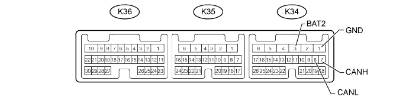
Disconnect the K34 suspension control ECU connector.
Measure the resistance according to the value(s) in the table below.
| Terminal No. (Symbol) | Wiring Color | Switch Condition | Specified Condition |
| K34-7 (CANH) - K34-8 (CANL) | V - L | Engine switch off | 54 to 69 Ω |
| K34-7 (CANH) - K34-1 (GND) | V - W-B | Engine switch off | 200 Ω or higher |
| K34-8 (CANL) - K34-1 (GND) | L - W-B | Engine switch off | 200 Ω or higher |
| K34-7 (CANH) - K34-3 (BAT2) | V - R | Engine switch off | 6 kΩ or higher |
| K34-8 (CANL) - K34-3 (BAT2) | L - R | Engine switch off | 6 kΩ or higher |
| CHECK WINDSHIELD WIPER ECU |
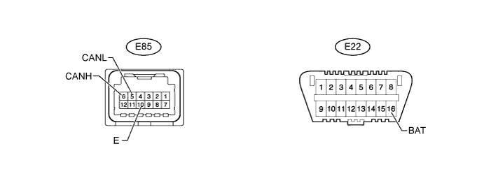
Disconnect the E85 windshield wiper ECU connector.
Measure the resistance according to the value(s) in the table below.
| Terminal No. (Symbol) | Wiring Color | Switch Condition | Specified Condition |
| E85-6 (CANH) - E85-5 (CANL) | LG - R | Engine switch off | 54 to 69 Ω |
| E85-6 (CANH) - E85-10 (E) | LG - W-B | Engine switch off | 200 Ω or higher |
| E85-5 (CANL) - E85-10 (E) | R - W-B | Engine switch off | 200 Ω or higher |
| E85-6 (CANH) - E22-16 (BAT) | LG - O | Engine switch off | 6 kΩ or higher |
| E85-5 (CANL) - E22-16 (BAT) | R - O | Engine switch off | 6 kΩ or higher |
| CHECK PARKING ASSIST ECU |
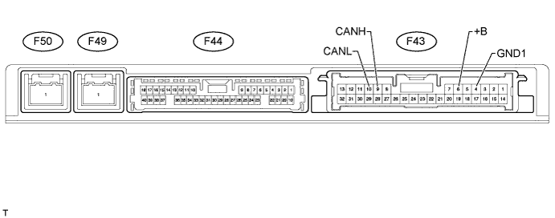
Disconnect the F43 parking assist ECU connector.
Measure the resistance according to the value(s) in the table below.
| Terminal No. (Symbol) | Wiring Color | Switch Condition | Specified Condition |
| F43-9 (CANH) - F43-10 (CANL) | V - L | Engine switch off | 54 to 69 Ω |
| F43-9 (CANH) - F43-4 (GND1) | V - W-B | Engine switch off | 200 Ω or higher |
| F43-10 (CANL) - F43-4 (GND1) | L - W-B | Engine switch off | 200 Ω or higher |
| F43-9 (CANH) - F43-6 (+B) | V - L | Engine switch off | 6 kΩ or higher |
| F43-10 (CANL) - F43-6 (+B) | L - L | Engine switch off | 6 kΩ or higher |